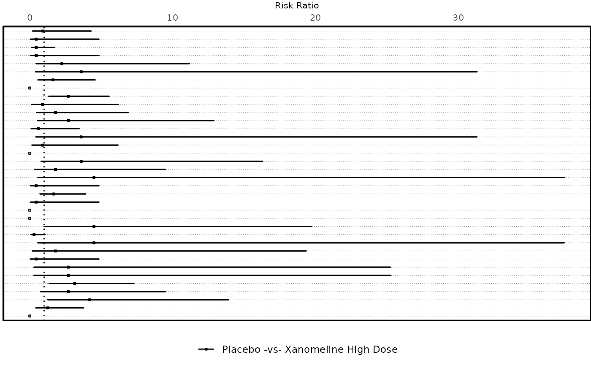

Forest Plot - base with errorbars
Usage
forest_plot_base(
datain,
xvar = "RISK",
yvar = "DPTVAL",
xminvar = "RISKCIL",
xmaxvar = "RISKCIU",
hovervar = "HOVER_RISK",
series_var = "TRTPAIR",
series_color = c("black", "black"),
xrefline = 1,
xaxis_pos = "top",
legend_opts = list(pos = "bottom", dir = "horizontal"),
hline_y = "Y",
axis_opts
)Arguments
- datain
Input dataset, pre-processed.
- xvar
X-axis variable (continuous)
- yvar
Y-axis variable (discrete)
- xminvar
Min. x value for errorbar (usually lower limit of Confidence Interval)
- xmaxvar
Max. x value for errorbar (usually upper limit of Confidence Interval)
- hovervar
Variable containing tooltip info (for interactive plot)
- series_var
Series Variable (To stratify by).
- series_color
Vector of colors for series variable
- xrefline
X-intercept value for vertical reference line
- xaxis_pos
Position of X axis and title. Values: "top"/"bottom"
- legend_opts
Legend styling option, a
listcontainingpos(position) anddir(direction).- hline_y
Horizontal line marking each Y variable to be plotted or not? "Y"/"N"
- axis_opts
A
listof axis specific options, usually retrieved fromplot_axis_opts(). Following elements - xaxis_label, xaxis_scale, Xlims, Xbrks, xsize, xtsize are utilised and required from list.
Examples
data("adae")
ae_pre_process <- ae_pre_processor(
datain = adae,
obs_residual = 0
)
ae_entry <- mentry(
datain = ae_pre_process$data,
byvar = "AEBODSYS",
trtvar = "TRTA",
trtsort = "TRTAN",
pop_fil = "SAFFL"
)
ae_risk <- risk_stat(
datain = ae_entry,
a_subset = ae_pre_process$a_subset,
summary_by = "Patients",
eventvar = "AEDECOD",
ctrlgrp = "Placebo",
trtgrp = "Xanomeline High Dose",
statistics = "Risk Ratio",
alpha = 0.05,
cutoff_where = "PCT > 2",
hoveryn = "Y"
) |>
dplyr::mutate(key = dplyr::row_number())
#> mcatstat success
forest_plot_base(
ae_risk,
xvar = "RISK",
yvar = "DPTVAL",
xminvar = "RISKCIL",
xmaxvar = "RISKCIU",
hovervar = "HOVER_TEXT",
series_var = "TRTPAIR",
xrefline = 1,
axis_opts = plot_axis_opts(
xaxis_label = "Risk Ratio",
xopts = list(labelsize = 8)
)
)
#> Warning: Ignoring unknown parameters: `linewidth`
#> Warning: Removed 10 rows containing missing values or values outside the scale range
#> (`geom_errorbarh()`).
